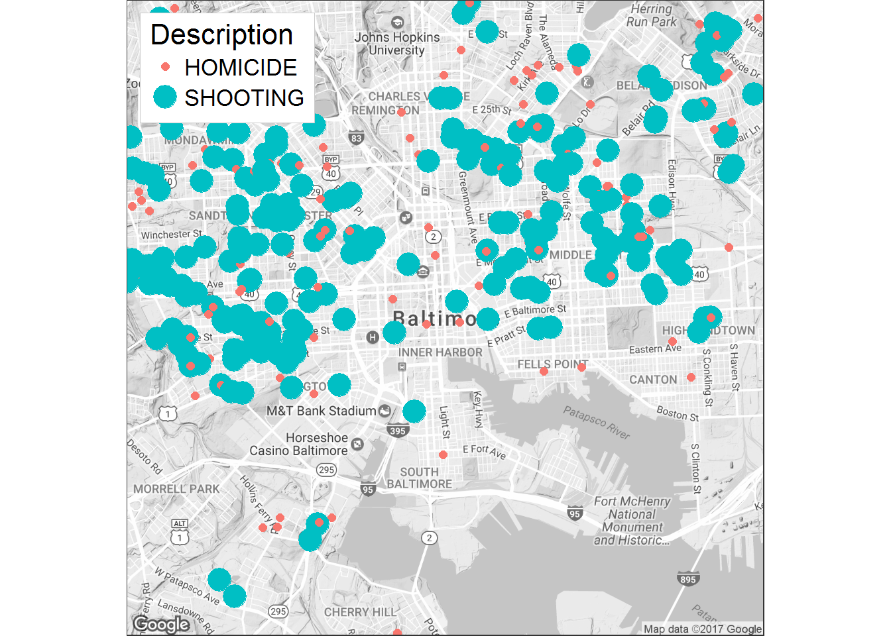

Using “Import Dataset” located under the Enviroment tab, I imported the Excel file
“C:/Users/Jennifer/Downloads/2014_Homicides_and_Shootings.xlsx”
Or I ran this code:
library(knitr)
library(readxl)
X2014_Homicides_and_Shootings <- read_excel("C:/Users/Jennifer/Downloads/2014_Homicides_and_Shootings.xlsx")
View(X2014_Homicides_and_Shootings)Next I bring up the first 6 rows:
head(X2014_Homicides_and_Shootings)## crimeCaseNumber CrimeDate CrimeCode CrimeTime Location
## 1 NA 2014-01-01 9S 2231 5900 EDNA AV
## 2 NA 2014-01-01 9S 1738 5100 QUEENSBERRY AV
## 3 NA 2014-01-01 1F 1520 3900 EDMONDSON AV
## 4 NA 2014-01-01 1F 1520 3900 EDMONDSON AV
## 5 NA 2014-01-02 1F 2115 1800 N Patterson Park Av
## 6 NA 2014-01-02 1F 2115 1800 N Patterson Park Av
## Description Weapon Post District Neighborhood
## 1 SHOOTING FIREARM 425 NORTHEASTERN Glenham-Belhar
## 2 SHOOTING FIREARM 614 NORTHWESTERN Central Park Heights
## 3 HOMICIDE FIREARM 844 SOUTHWESTERN Edmondson Village
## 4 HOMICIDE FIREARM 844 SOUTHWESTERN Edmondson Village
## 5 HOMICIDE FIREARM 331 EASTERN Broadway East
## 6 HOMICIDE FIREARM 331 EASTERN Broadway East
## Lon Lat
## 1 (39.3542200000 -76.5550700000)
## 2 (39.3506000000 -76.6722800000)
## 3 (39.2939000000 -76.6812700000)
## 4 (39.2939000000 -76.6812700000)
## 5 (39.3110600000 -76.5859100000)
## 6 (39.3110600000 -76.5859100000)Next I plot the data:
library(ggmap)## Loading required package: ggplot2library(ggplot2)
df <- data.frame(X2014_Homicides_and_Shootings)
lon2 <- sub("^\\(", "", X2014_Homicides_and_Shootings$Lon)
lon <- as.numeric(lon2)
lat2 <- sub(")", "", X2014_Homicides_and_Shootings$Lat)
lat <- as.numeric(lat2)
theme_set(theme_bw(16))
BaltimoreMap <- qmap("Baltimore", zoom = 13, color = "bw", legend = "topleft")## Map from URL : http://maps.googleapis.com/maps/api/staticmap?center=Baltimore&zoom=13&size=640x640&scale=2&maptype=terrain&language=en-EN&sensor=false## Information from URL : http://maps.googleapis.com/maps/api/geocode/json?address=Baltimore&sensor=false## Warning: `panel.margin` is deprecated. Please use `panel.spacing` property
## insteadBaltimoreMap +
geom_point(aes(x = lat, y = lon, colour = Description, size = Description),
data = df)## Warning: Using size for a discrete variable is not advised.## Warning: Removed 229 rows containing missing values (geom_point).